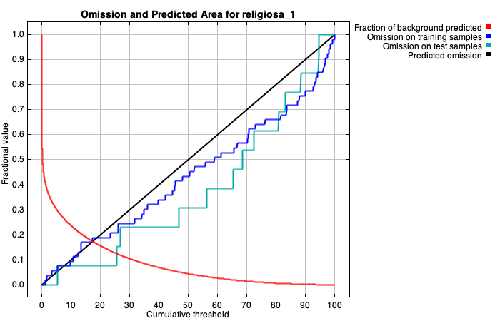
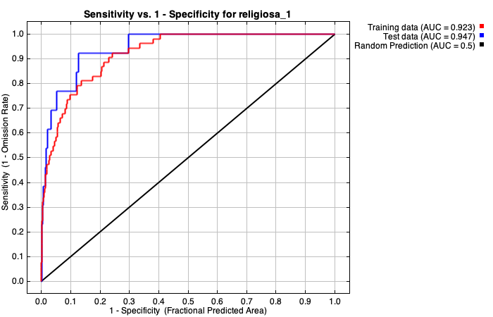
| Cumulative threshold | Cloglog threshold | Description | Fractional predicted area | Training omission rate | Test omission rate | P-value |
|---|---|---|---|---|---|---|
| 1.000 | 0.031 | Fixed cumulative value 1 | 0.420 | 0.000 | 0.000 | 1.284E-5 |
| 5.000 | 0.113 | Fixed cumulative value 5 | 0.303 | 0.057 | 0.000 | 1.79E-7 |
| 10.000 | 0.177 | Fixed cumulative value 10 | 0.237 | 0.094 | 0.077 | 3.199E-7 |
| 1.254 | 0.038 | Minimum training presence | 0.406 | 0.000 | 0.000 | 8.042E-6 |
| 10.709 | 0.184 | 10 percentile training presence | 0.230 | 0.094 | 0.077 | 2.219E-7 |
| 17.239 | 0.250 | Equal training sensitivity and specificity | 0.175 | 0.170 | 0.077 | 8.829E-9 |
| 9.643 | 0.174 | Maximum training sensitivity plus specificity | 0.241 | 0.075 | 0.077 | 3.833E-7 |
| 25.519 | 0.336 | Equal test sensitivity and specificity | 0.126 | 0.208 | 0.154 | 7.47E-9 |
| 25.500 | 0.335 | Maximum test sensitivity plus specificity | 0.126 | 0.208 | 0.077 | 1.765E-10 |
| 1.254 | 0.038 | Balance training omission, predicted area and threshold value | 0.406 | 0.000 | 0.000 | 8.042E-6 |
| 13.426 | 0.211 | Equate entropy of thresholded and original distributions | 0.204 | 0.170 | 0.077 | 5.625E-8 |
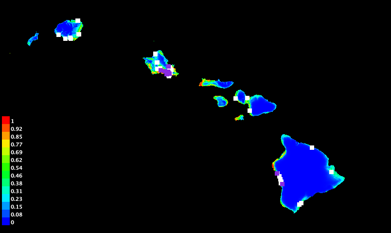
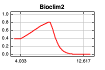
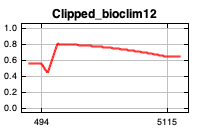
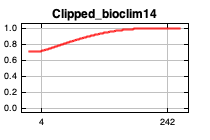
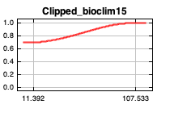
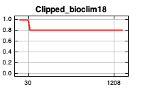
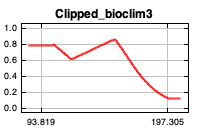
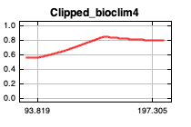
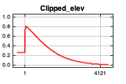
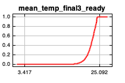
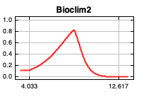
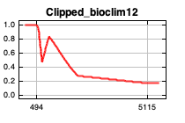
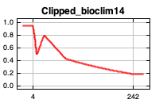
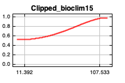
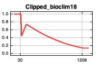
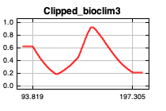
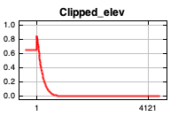
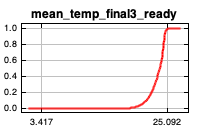
| Variable | Percent contribution | Permutation importance |
|---|---|---|
| Clipped_elev | 59.1 | 6.4 |
| mean_temp_final3_ready | 22.2 | 79.8 |
| Bioclim2 | 8.6 | 9.7 |
| Clipped_bioclim3 | 6.2 | 0.8 |
| Clipped_bioclim12 | 3 | 0.8 |
| Clipped_bioclim18 | 0.3 | 0.4 |
| Clipped_bioclim15 | 0.2 | 0.7 |
| Clipped_bioclim4 | 0.2 | 0 |
| Clipped_bioclim14 | 0.2 | 1.4 |
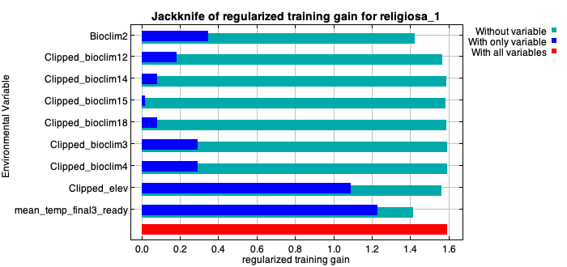
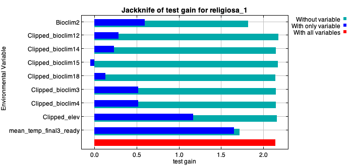
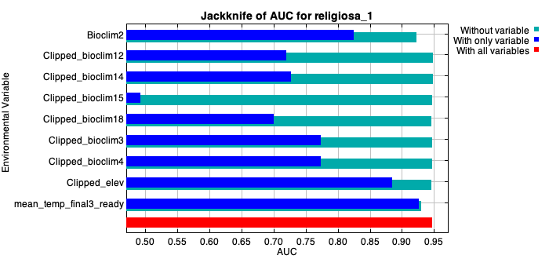